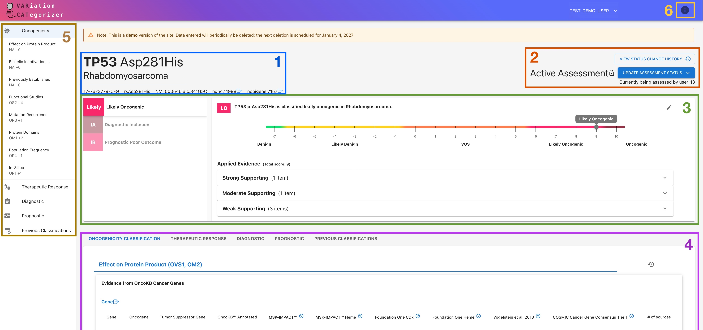

Concepts to Know¶
Overview¶
VarCat assists users in evaluating somatic variant/disease pairings by curating evidence to support conclusions about oncogenicity and, when needed, therapeutic, diagnostic, and/or prognostic significance. Such evaluations are called "assessments," which are structured as shown below:
Anatomy of an Assessment¶

- Header: identifies the disease, genomic variant, associated gene concepts, and variant consequence under review.
- Status Section: shows the assessment's current status, checkout information, and status history. Use this section to:
- Move the assessment to the next or previous status
- Overtake an active assessment from another user
- Review the assessment's status history, including who previously checked out the assessment and when
- Summary Modal: lists the assessment's assertions (left) and displays a summary of the selected assertion (right), including its:
- Classification: The current conclusion drawn by this assertion
- Score: The current strength of support the applied evidence has for this conclusion
- Applied Evidence: A summary list of the evidence currently contributing to that result
- Evidence Tabs: contain the evidence for each assertion type.
- Quick-Nav sidebar: allows quick navigation to the various sections of the assessment, and displays current assessment progress.
- Info Button: Pulls up a dynamically-updating informational sidebar with additional explanations about VarCat and the content of the current assertion.
Core Terms¶
Assessment¶
An assessment is a review of one variant/disease pairing.
Assertion¶
An assertion is one conclusion within an assessment.
Every assessment contains one or more assertions that analyze different aspects of the variant/disease pairing according to the following standardized guidelines:
- ClinGen/CGC/VICC Oncogenicity Standard Operating Procedures (2022):
- Oncogenicity Classification*
- AMP/ASCO/CAP Guidelines (2017):
- Therapeutic Response
- Diagnostic Inclusion/Exclusion
- Prognostic Outcome Prediction
*An Oncogenicity Classification assertion is required on every assessment; all other assertions are optional.
Evidence¶
Evidence is the information used to support or refute an assertion. It is handled in two steps:
- Curation:
- VarCat pulls in evidence automatically from a variety of sources where possible. Users may optionally add additional evidence from other sources or edit the VarCat-curated evidence if desired.
- Application:
- In order for evidence to count towards the assertion's outcome, it must be applied to the assertion by giving it a score that tells VarCat the strength and directionality of its impact:
- Directionality: Whether the Evidence supports or refutes the statement the assertion is attempting to make
- Strength: How confident we are that this evidence supports that conclusion
- Similar evidence is applied together and evaluated as one - see Evidence Line below.
A Note on Applying Evidence: Not Applied/Not Applicable and Not Assessed¶
Evidence can be applied a variety of different ways, depending on its type; however, most evidence will have the option of being applied as Not Assessed, and all evidence can be set to Not Applied:
- Not Assessed: Indicates that this evidence was not evaluated. It has no impact on the Assertion's overall score, either positively or negatively.
- Not Applied/Not Applicable: Indicates that this evidence was determined to be irrelevant to the Assertion. It also has no impact on the Assertion's overall score.
Shared Evidence¶
Evidence for a variant is shared across all of that variant's assessments to reduce duplicative curation efforts.
Because of this, editing evidence can affect other assessments. In most cases, evidence should be added or unapplied, not edited or deleted. Evidence is locked (i.e., unable to be edited) after an assessment on which it's been applied is set to Reviewed (see Assessment Status below).
Evidence Line¶
Evidence items of the same type are grouped together under a single evidence line. All items grouped under a given evidence line are evaluated as one and are applied under a single score.
Assessment Status¶
Assessments move through a lifecycle of the following statuses:
Pending: Assessment has not yet been completed.Active: Assessment is actively being filled out.Awaiting Review: Assessment is complete, but awaiting expert review and final sign-off.In Review: Assessment is being reviewed by a designated authority (e.g., Clinical Director or similar)*Reviewed: Assessment has received sign-off from the Reviewer and is now finalized.
An assessment can return to Pending if it needs to be worked again.
⚠️ *NOTE: Reviewing privileges have intentionally been restricted for the demo site. You will not be able to set an assessment's status to
In RevieworReviewed.
Quick-Reference Glossary¶
| Term | Meaning |
|---|---|
| Assessment | A review of one variant and one disease pairing. |
| Assertion | One conclusion within an assessment. |
| Evidence | Information used to support or refute an assertion. |
| Evidence Line | A set of related evidence items scored together. |
| Assessment Status | The current stage of the assessment workflow. |